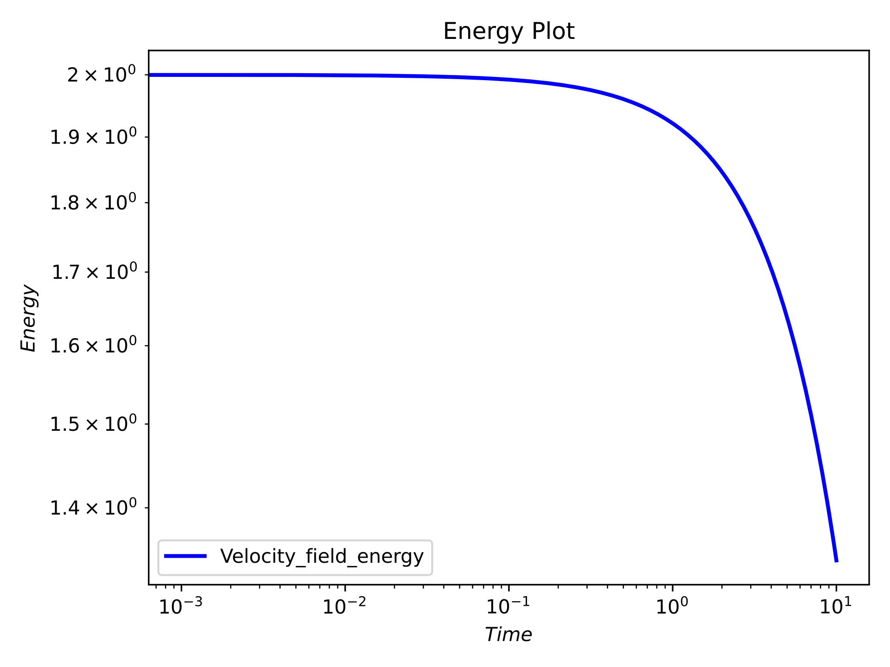
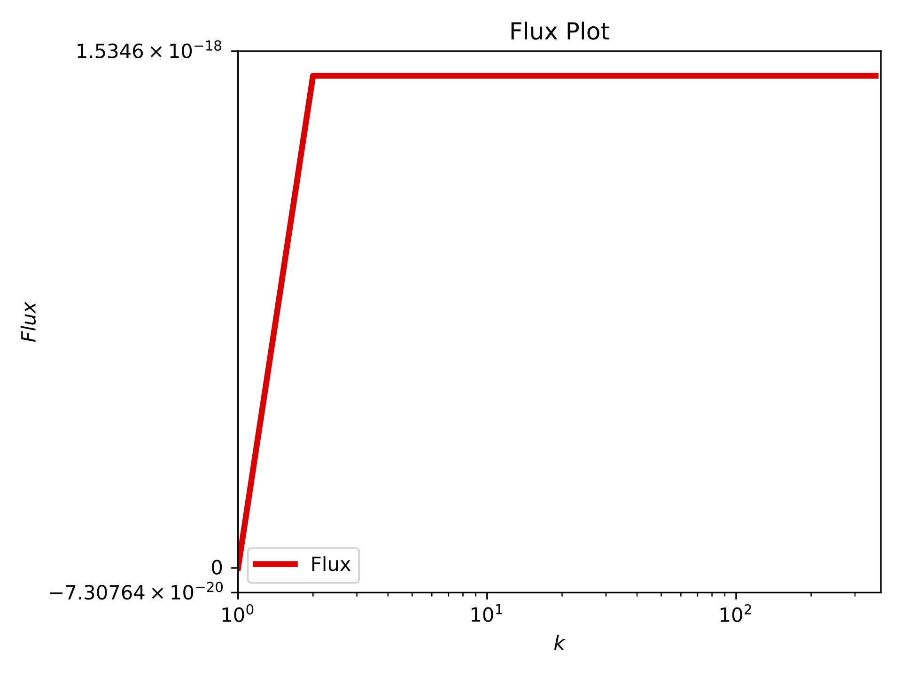
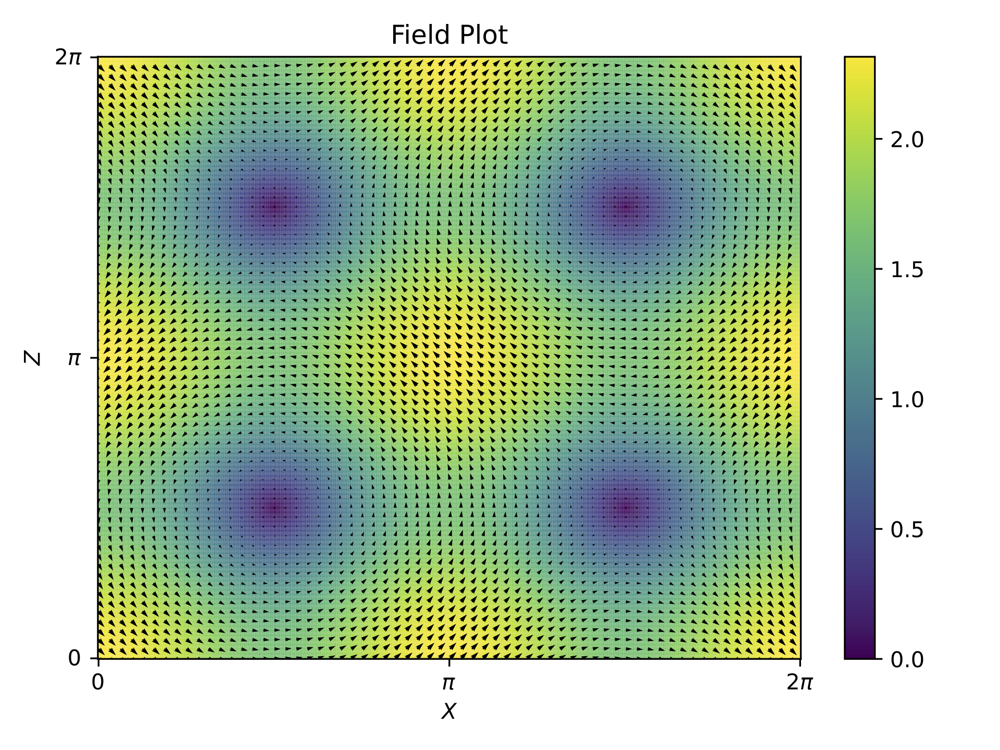

2D Hydrodynamics - Pair of Vortices#
Problem setup#
In this 2D hydrodynamics simulation, we initialize a pair of vortices using the following velocity field components in Fourier space:
U.Vkx[1,0] = 0+0j
U.Vkz[1,0] = -1+0j
U.Vkx[0,1] = 1+0j
U.Vkz[0,1] = 0+0j
These initial conditions set up a pair of counter-rotating vortices, which will evolve over time according to the specified simulation parameters.
Specifying parameters#
para.py defines all the key parameters needed to run a simulation. It controls aspects like computational settings (CPU/GPU), grid resolution, numerical schemes, and data output frequency.
device = 'CPU' # 'CPU' or 'GPU' depending on device
device_rank = 0 # Rank of GPU device if 'GPU' is selected
kind = 'HYDRO' # Type of simulation (e.g., 'HYDRO' for hydrodynamics)
INPUT_SET_CASE = True # Whether to use a predefined case or custom initial conditions
input_case = 'custom' # Name of the input case if INPUT_SET_CASE is True
dimension = 2 # Number of spatial dimensions
Nx = 512 # Number of grid points in the x, y or z direction
Ny = 1
Nz = 512
BOX_SIZE_DEFAULT = True # Whether to use the default box size
nu = 2E-2 # Kinematic viscosity
FORCING_ENABLED = False # Whether external forcing is enabled
time_scheme = 'RK4' # Time integration scheme (e.g., 'RK4' for Runge-Kutta 4th order)
t_initial = 0 # Initial time
t_final = 10 # Final time
dt = 1E-3 # Time step size
FIXED_DT = True # Whether to use a fixed time step size
PRINT_PARAMETERS = True # Whether to print simulation parameters
iter_field_save_start = t_initial # Iteration to start saving field data
iter_field_save_inter = 100 # Interval between saving field data
iter_glob_energy_print_start = t_initial # Iteration to start printing global energy
iter_glob_energy_print_inter = 1 # Interval between printing global energy
iter_ekTk_save_start = t_initial # Iteration to start saving kinetic and thermal energy
iter_ekTk_save_inter = 100 # Interval between saving kinetic and thermal energy
iter_modes_save_start = t_initial # Iteration to start saving mode data
iter_modes_save_inter = 1000 # Interval between saving mode data
Running the code#
To execute the solver, simply run the tarang_cli.py script:
python3 tarang_cli.py
Note: All commands have to be run from the root directory of the solver bundle i.e. from the same directory as para.py or tarang_cli.py.
This will produce an output similar to the following:
TARANG
Running SEQUENTIAL SOLVER on CPU at rank 0 with PID 5323
Output path = path/to/output
Dimension = 2
Grid resolution = [512, 1, 512]
Box size = [6.283185307179586, 6.283185307179586, 6.283185307179586]
Time scheme = RK4
t_initial = 0
t_final = 10
dt = 0.001
Modes probe = [(1, 0)]
Problem kind is HYDRO
Active viscous dissipation = ['(0.02)k^{2}']
No external forcing: Decaying simulation
t dt Eu div_u eps_u
0 0.001 2.0 0.0 0.08
0.001 0.001 1.999920001599979 3.6995906119510824e-32 0.07999680006399916
.
.
.
9.999 0.001 1.3406937187474521 1.725685891514344e-31 0.053627748749898084
10.0 0.001 1.3406400920712431 1.6640580836512109e-31 0.05362560368284973
Compute time = 1067.868339061737
Time per step = 0.1067868339061737
Output Structure#
If the same parameters were used, the output directory will contain the following structure:
output/
├── ekTk.h5 # Energy spectrum data
├── fields/ # Solution snapshots
│ ├── Soln_0.000000.h5
│ ├── Soln_0.100000.h5
│ ├── ...
│ └── Soln_10.000000.h5
├── glob.h5 # Global diagnostics data like energy, dissipation rate
├── modes.h5 # Mode-specific time evolution
├── para.py # Parameter file
├── paraIO.py # Input/output configuration
├── t_dt.h5 # Time step evolution
└── t_field_save.h5 # Field saving time data
Soln_X.XXXXXX.h5 (Field Snapshots)#
Captures the state of the velocity field at different time steps during the simulation.
Soln_X.XXXXXX.h5
├Vkx [(r: float64, i: float64): 512 × 257] # X-component of the Velocity Fourier field
└Vkz [(r: float64, i: float64): 512 × 257] # Z-component of the Velocity Fourier field
ekTk.h5 (Energy Spectrum Data)#
Contains the evolution of kinetic energy (ek) and transfer functions (Tk) over time.
ekTk.h5
├Tk [float64: 101 × 364 × 2] # Transfer function at different time steps
├ek [float64: 101 × 364 × 2] # Energy spectrum values
├k [float64: 364] # Wavenumber array
└t [float64: 101] # Time instances corresponding to stored values
glob.h5 (Global Diagnostics)#
Stores integral quantities describing the overall evolution of the flow.
glob.h5
├ Eu [float64: 10001] # Total kinetic energy over time
├ Eu_dissipation [float64: 10001] # Energy dissipation rate
├ div_v [float64: 10001] # Divergence of velocity field
└ t [float64: 10001] # Time array
modes.h5 (Mode Evolution)#
Tracks the evolution of selected Fourier modes over time.
modes.h5
├modes_Vx [(r: float64, i: float64): 11 × 1] # X-component mode values (real & imaginary)
├modes_Vz [(r: float64, i: float64): 11 × 1] # Z-component mode values (real & imaginary)
└t [float64: 11]
t_dt.h5 (Time Step Evolution)#
Stores the time step (dt) used during the simulation.
t_dt.h5
├ dt [float64: 10000] # Time step values at different iterations
└ t [float64: 10000] # Corresponding time array
t_field_save.h5 (Field Saving Times)#
Records the time instances at which field snapshots were saved.
t_field_save.h5
└t [float64: 101] # Time steps when solution snapshots were stored
Post-processing#
To generate post-processing plots, run the post_proc/post_proc.py script while specifying the required plot type in command line arguments:
python3 post_proc/post_proc.py '<output_plot_dir>' '<t_initial> <t_final>' spectrum energy flux field
'<output_plot_dir>': The directory where the generated plots will be saved.'<t_initial> <t_final>': The initial and final time for averaged plots. If both are equal plot will be made for a single frame.spectrum: Generates a spectrum plot.energy: Generates an energy plot.flux: Generates a flux plot.field: Generates a field quiver plot.
Note: Do not forget the quotation marks for output directory and the time entries.
Running this script should give the following plots displayed and stored in output/plots folder for $To generate post-processing plots, run the post_proc/post_proc.py script while specifying the required plot type in command line arguments:
python3 post_proc/post_proc.py '<output_plot_dir>' '<t_initial> <t_final>' spectrum energy flux field
'<output_plot_dir>': The directory where the generated plots will be saved.'<t_initial> <t_final>': The initial and final time for averaged plots. If both are equal plot will be made for a single frame.spectrum: Generates a spectrum plot.energy: Generates an energy plot.flux: Generates a flux plot.field: Generates a field quiver plot.
Note: Do not forget the quotation marks for output directory and the time entries.
Running this script should give the following plots displayed and stored in output/plots folder for $T = 10$:
Time series energy plot#

Spectrum plot at T=10#

Flux plot at T=10#

Field snapshot at T=10#
